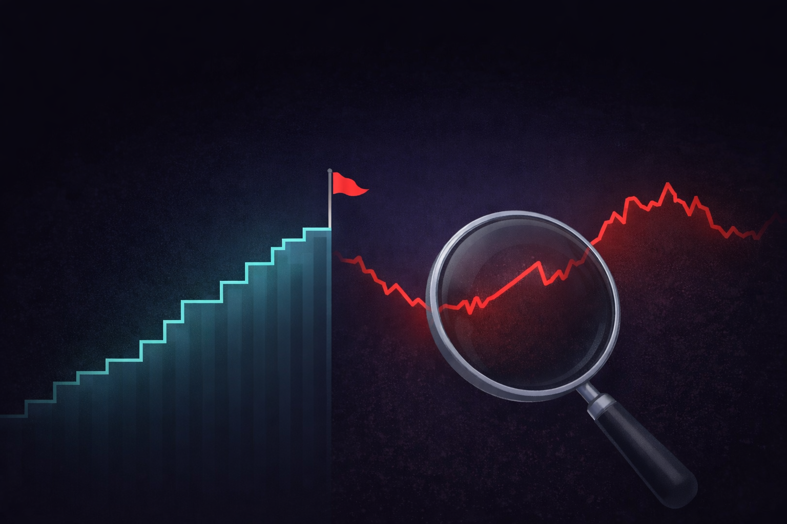
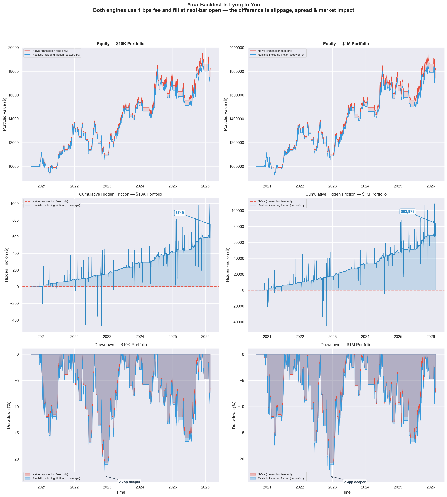

Why Your Backtest Is Lying to You
The uncomfortable truth about retail quant infrastructure — and how to finally build strategies that hold up in live trading.
You've been here before. You run a backtest. The equity curve looks beautiful — a clean, ascending staircase with a Sharpe ratio above 2.0 and a max drawdown you could live with. You feel the familiar rush of having found something real. Then you go live, and within six weeks, the strategy has given back half its paper gains.
This isn't bad luck. It's infrastructure.
Most backtesting frameworks — the ones that are free, widely documented, and easy to get started with — are quietly optimistic by default. They were built for speed and convenience, not rigor. And the gap between what they show you and what the market actually delivers has ended careers, blown up accounts, and convinced talented people that systematic trading simply "doesn't work for retail."
It does work. But only if your backtesting engine is telling you the truth.
The Retail Quant Trap: Sophistication Without Infrastructure
There's never been a better time to be a retail quant, at least on the surface. You have access to high-quality tick data, cloud compute, Python libraries that implement everything from momentum factors to transformer-based regime detection, and broker APIs that can execute complex multi-leg strategies at near-zero commission.
But there's an asymmetry. The strategy side of the stack has been thoroughly democratized. The validation side hasn't.
Institutional desks have entire teams dedicated to ensuring backtests reflect reality: execution specialists who model market impact, risk teams who stress-test assumptions, engineers who maintain the simulation environment with the same care as production systems. When a stat arb desk at a hedge fund backtests a strategy, the backtest is adversarial by design. It's trying to find reasons the strategy won't work before money is on the line.
Retail quants are building on engines designed to answer a simpler question: "Would this have made money?" That's the wrong question. The right question is: "Would this have made money, accounting for every real-world friction, at the exact sizing and frequency I intend to trade it?"
The difference between those two questions is where returns go to die.
The Seven Ways Your Backtest Is Optimistic
1. Look-Ahead Bias: The Silent Killer
Look-ahead bias occurs when your backtest uses information that wouldn't have been available at the time a decision was made. It sounds obvious, and every backtesting tutorial mentions it — but it is astonishingly easy to introduce accidentally.
Consider a simple case: you're using daily OHLC data and triggering trades on the close. Many frameworks process the entire day's bar before evaluating signals, which means your signal can technically "see" that day's close before deciding whether to trade on it. You've used the outcome to make the decision.
Or consider feature engineering. If you normalize a price series using its full-sample mean and standard deviation before splitting into train and test sets, future data has leaked into past signals. Your model has, in effect, read tomorrow's newspaper.
A robust backtesting engine needs to enforce a strict event-time model: every data point has a timestamp representing when it became known, not when the underlying event occurred. This distinction is the difference between a correct simulation and a fairy tale.
2. Fill Assumptions That Were Never True
How does your backtest assume your orders get filled?
For most retail-grade frameworks, the default is something like: "If a bar crosses your limit price, you're filled at that price." Or, even more aggressively: "Market orders are filled at the open of the next bar."
These assumptions borrow heavily from a world of unlimited liquidity, zero market impact, and a broker that processes your order before anyone else's. None of that is true.
The correct approach is probabilistic fill modeling. Your engine should track whether volume at the target price was sufficient to absorb your order, and should simulate partial fills, slippage distributions, and queue position.
3. Transaction Costs: The Tax You're Underpaying
"But I account for commissions," you say. And you probably do — a flat per-share or per-contract cost that covers the explicit broker fee. What you're likely not accounting for:
Bid-ask spread. Every round-trip involves crossing the spread at least partially. For a strategy with a 5 bps expected edge trading a stock with a 10 bps spread, you don't have an edge — you have a slow bleed.
Market impact. Your orders change the price, especially on the close of an order flow burst. A strategy that trades 10% of average daily volume in a single session is not a price taker. It's a price mover.
Borrow costs for short positions. Hard-to-borrow names can cost 20–40% annualized, sometimes more.
Funding costs for leveraged positions. Margin has a cost. If your strategy is levered, the interest drag is part of the P&L calculation.
A complete transaction cost model is arguably the single most impactful improvement you can make to a retail backtest. Strategies that look like 15% annualized net of commissions often look like 6% net of full costs.
4. Survivorship Bias: The Graveyard You're Ignoring
If you build and test equity strategies using a dataset of currently listed stocks, you have a survivorship problem. The companies that failed, merged, or delisted between your backtest start date and today are absent from your universe — but they were present in the market during that period.
This matters enormously for strategies with any mean-reversion or value tilt. Those strategies tend to buy companies that look cheap relative to their history. Companies that ultimately go to zero look very cheap just before they do.
5. Overfitting: The Optimization Trap
When your framework makes it easy to run hundreds of parameter combinations and visualize their equity curves, you will overfit. Not because you're being sloppy, but because human pattern recognition is very good at finding structure in noise.
The corrective isn't to avoid optimization — it's to correct for it. Walk-forward analysis, combinatorial purged cross-validation (CPCV), and Monte Carlo permutation testing are not exotic academic tools. They're necessary hygiene for any systematic strategy.
The question isn't "does this parameter set have a good historical Sharpe?" It's "what is the probability that this historical Sharpe could be explained by randomness alone?"
6. Regime Blindness: One Backtest Doesn't Cover All Markets
Equity markets from 2010 to 2021 were characterized by low volatility, central bank suppression of tail risk, persistent momentum in growth names, and essentially zero cost of carry for long positions. A backtest that looks good over that period doesn't tell you much about how a strategy would behave in a high-inflation, rising-rate environment — the environment that showed up in 2022.
A good backtesting engine should make regime analysis easy, not an afterthought.
7. Timestamp and Time Zone Failures
Financial data comes from dozens of different vendors, exchanges, and asset classes, each with its own conventions for timestamps, time zones, daylight saving time handling, and bar construction. When you merge these data sources in a backtest, misalignments of even a single minute can introduce look-ahead bias, phantom arbitrage signals, or execution timestamps that don't correspond to any real trading session.
The fix is a strict, unified timestamp model across all data sources — and an engine that enforces it rather than leaving it to the strategy developer to manage manually.
What Rigorous Backtesting Infrastructure Actually Looks Like
The challenges above are not one-off bugs you can fix by reviewing your code more thoroughly. They're structural. Here's what proper infrastructure needs to provide:
- A strict event-time model. Every data point must carry a knowledge timestamp distinct from an event timestamp.
- Realistic order execution simulation. Partial fills, slippage from empirical distributions, and market impact that scales with order size relative to liquidity.
- Complete cost accounting. Spread, borrow costs, funding costs, and instrument-specific fees — not just commissions.
- Point-in-time universe and data management. The engine should know what was known on any given historical date.
- Built-in statistical validation. Walk-forward testing, permutation tests, and cross-validation as first-class features.
- Regime analysis tooling. Performance decomposition by market regime, volatility state, or macroeconomic environment.
- Unified data handling. Timestamps, time zones, and normalization handled consistently for every asset class.
Naive vs. Realistic: The Difference in Practice
To make this concrete, here's a side-by-side comparison of the same momentum strategy backtested two ways. Both engines use 1 bps fee and fill at next-bar open — the only difference is that the realistic engine (cobweb-py) adds slippage, spread, and market impact modeling.

Same strategy, same data, same fee — but $749 in hidden friction at $10K scales to $83,973 at $1M. Drawdowns run 2+ percentage points deeper when you model real execution.
| $10K | $1M | |
|---|---|---|
| Naive final equity | $18,268.64 | $1,826,863.59 |
| Realistic final equity | $17,519.82 | $1,742,890.21 |
| Hidden friction | $748.81 | $83,973.38 |
| Naive max drawdown | -21.0% | -21.0% |
| Realistic max drawdown | -23.2% | -23.3% |
| Drawdown gap | 2.2pp | 2.3pp |
The top row shows equity curves diverging over time as realistic friction compounds. The middle row isolates the cumulative hidden cost — the gap between what a naive backtest promises and what you'd actually keep. The bottom row reveals deeper drawdowns under realistic conditions, exactly the kind of risk that gets missed by optimistic engines.
At $10K, the gap is manageable. At $1M, it's nearly $84,000 in phantom returns your naive backtest told you were real. This is the tax you pay for trusting an engine that doesn't model execution.
The Cost of Getting This Wrong
Assume you have a strategy with a true Sharpe of 0.9 — genuinely positive-expectation, worth running. Your backtest, due to the combination of errors above, reports a Sharpe of 1.8. You size the strategy based on the backtested characteristics and allocate $100,000.
Based on the backtested metrics, your actual 5-percentile drawdown is roughly twice as large as expected. You hit it within the first year. You close the strategy, concluding it "stopped working."
But it was always going to work at the level the true Sharpe suggested. You just sized it for a strategy twice as good as the one you had.
This is the retail quant lifecycle for an enormous number of practitioners. Not because they're building bad strategies, but because they're validating them with tools that aren't adversarial enough to reveal the truth.
Why Most Quants Don't Fix This (Yet)
- Path dependence. Most retail quants learned backtesting using one of a handful of popular frameworks. Relearning has an upfront cost.
- The illusion of working. Flawed backtests produce output. They produce equity curves and statistics and tearsheets. Nothing visibly breaks. The failure mode is invisible until you're live and losing money.
- Framework inertia. A quant who has spent 18 months building a library of strategies on a given framework has a strong incentive to stay on it.
- Availability of alternatives. Until recently, the genuinely rigorous options were either institutional (not available to retail) or impractical to use in production.
That last constraint is changing.
A Better Way Forward
The right tool doesn't just run your strategy against historical data. It interrogates your strategy. It asks whether your fills are realistic. It checks whether your signals are clean of look-ahead contamination. It tells you what your performance would have looked like across regimes you haven't lived through yet. It surfaces the gap between your gross backtest and your net-of-everything reality.
This is exactly what cobweb-py was built to do.
cobweb-py is a Python-native backtesting engine designed from first principles around simulation fidelity. It handles the structural problems outlined in this post at the infrastructure level: enforcing strict event-time semantics, simulating realistic fills against volume data, applying complete cost accounting, and surfacing statistical validation as a core workflow.
It works with pandas DataFrames and numpy arrays, integrates cleanly with Jupyter-based research environments, and outputs results in formats compatible with the statistical libraries you're already using.
More importantly, it's adversarial by design. It's trying to find reasons your strategy won't work before you put real money on it.
Three Questions to Ask Your Current Backtest
Before you look at any new tooling, run this diagnostic on your current setup.
Question 1: What is my backtest's fill assumption for limit orders?
If the answer is "filled whenever the bar crosses my price," your backtest is likely too optimistic. A realistic engine should require sufficient volume at price and model partial fills.
Question 2: Does my cost model include spread, borrow, and funding — or just commissions?
Calculate the all-in cost per round-trip. If your cost assumption is less than 1.5x your explicit commission, you're almost certainly underestimating.
Question 3: Can I run a permutation test on my backtest results?
Shuffle your signal randomly and run the same backtest. If your actual Sharpe doesn't clearly stand apart from the distribution of shuffled Sharpe ratios, you may not have an edge. You have noise that fits historical data.
The Bottom Line
Systematic trading works. The math is real, the edges are real, and the systematic approach to markets is a genuine and durable source of alpha for practitioners who execute it correctly.
But "correctly" starts with infrastructure. A strategy that produces a 1.8 Sharpe on a flawed backtest and a 0.6 Sharpe in live trading isn't a failed strategy — it's an untested one.
Real validation is adversarial. It assumes fills are hard to get. It taxes every transaction fully. It checks whether performance holds across regimes and survives statistical stress tests. It asks whether your results are signal or noise before your capital is the one making the bet.
The tools to do this rigorously — at retail scale, in Python, without an institutional infrastructure team — now exist.
The question is whether you'll use them before the market teaches you why you should have.
Get started in 30 seconds
Install cobweb-py and run your first friction-aware backtest.
Read the quickstart →30 Lines to a Full Backtest
import yfinance as yf from cobweb_py import CobwebSim, BacktestConfig, fix_timestamps, print_signal from cobweb_py.plots import save_equity_plot, save_metrics_table # 1. Grab SPY data df = yf.download("SPY", start="2020-01-01", end="2024-12-31") df.columns = df.columns.get_level_values(0) df = df.reset_index().rename(columns={"Date": "timestamp"}) rows = df[["timestamp","Open","High","Low","Close","Volume"]].to_dict("records") data = fix_timestamps(rows) # 2. Connect (free, no key needed) sim = CobwebSim("https://web-production-83f3e.up.railway.app") # 3. Simple momentum: long when price > 50-day SMA close = df["Close"].values sma50 = df["Close"].rolling(50).mean().values signals = [1.0 if c > s else 0.0 for c, s in zip(close, sma50)] signals[:50] = [0.0] * 50 # 4. Backtest with realistic friction bt = sim.backtest(data, signals=signals, config=BacktestConfig(exec_horizon="swing", initial_cash=100_000)) # 5. Results print(f"Return: {bt['metrics']['total_return']:.2%}") print(f"Sharpe: {bt['metrics']['sharpe_ann']:.2f}") print(f"Max DD: {bt['metrics']['max_drawdown']:.2%}") print(f"Trades: {bt['metrics']['trades']}") print_signal(bt) save_equity_plot(bt, out_html="equity.html") save_metrics_table(bt, out_html="metrics.html")